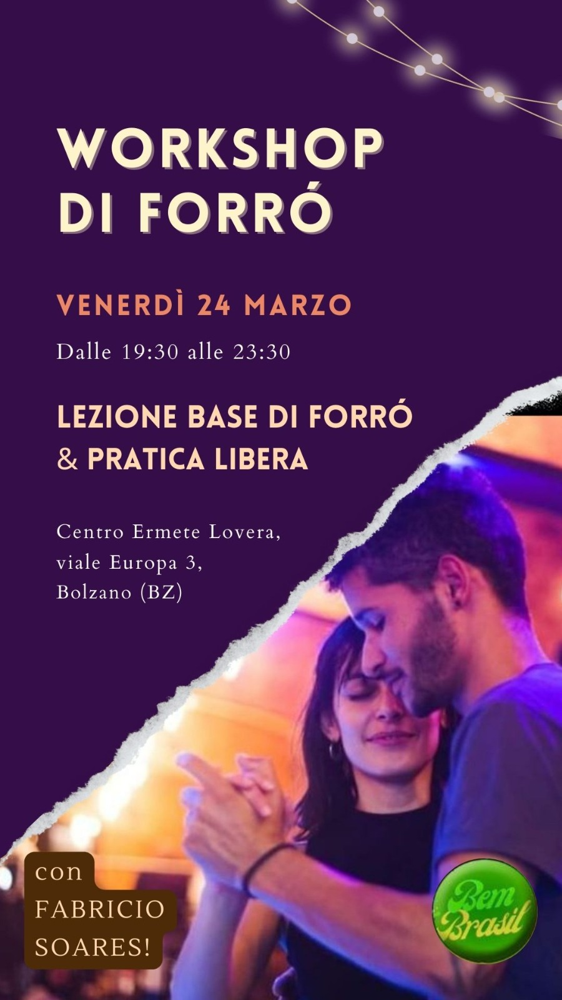
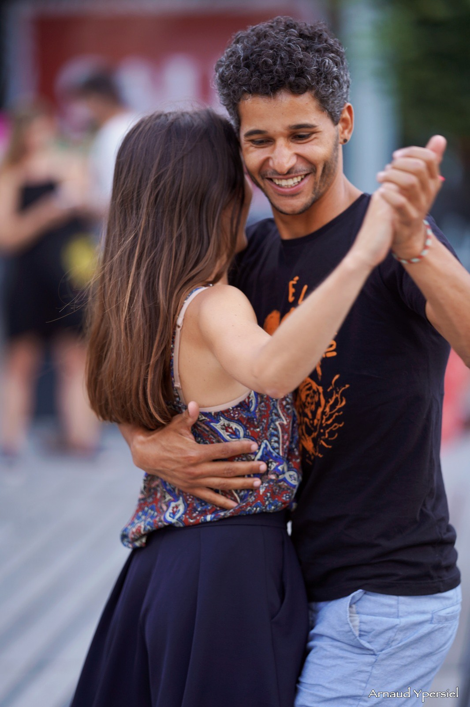

Workshop di Forró
Venerdí 24 marzo 2023, dalle ore 19:30 alle 23:30 si terra un workshop di Forró e pratica libera al centro Lovera a Bolzano.
Vieni a provare il ballo di coppia brasiliano che sta spopolando in Europa! 💃 🇧🇷
Non è necessario avere un accompagnatore, puoi venire anche da solo/a ✨
📋 PROGRAMMA:
- 19.30-21.30 Lezione base di forrò con @fabri.forro 🇧🇷 ballerino e professore di forrò di Rio de Janeiro!!
- 21.30-23.30 Pratica libera per tutti i livelli
💶 PREZZI (early bird):
- Lezione e pratica libera: 10€
- Lezione e pratica libera soci: 5€
- Solo pratica libera: 3€
- Solo pratica libera soci: gratis
⚠️ PREZZI last minute (per registrazioni e pagamenti dopo il 14 Marzo):
- Lezione e pratica libera: 12€
- Lezione e pratica libera soci: 6€
- Solo pratica libera: 3€
- Solo pratica libera soci: gratis
🗓 QUANDO: Venerdì 24 Marzo, dalle 19.30 alle 23.30
📍 DOVE: Centro Ermete Lovera, viale Europa 3, Bolzano (BZ)
⚠️ Posti limitati! Registrati al seguente LINK per riservare il posto e per ricevere update 🥳
La quota per il workshop va trasferito tramite bonifico nel conto della associazione con causale “NOME workshop forro” entro il 14 Marzo 2023. Dopo questa data si applica il prezzo “last minute”.
Le coordinate bancarie possono essere trovate qui.

Insegnante: Fabrício Soares
È un grande onore per noi presentarvi l’insegnante che terrà la lezione: Fabrício Soares 🥳

Nato e cresciuto a Rio de Janeiro, dopo aver scoperto la passione per il forró ha frequentato le lezioni con diversi insegnanti a Rio de Janeiro fino a quando ha finalmente conosciuto lo stile e la tecnica di Hugo Silva, a Belo Horizonte, dove è entrato a far parte del team di Simbora Dançar, una scuola gestita da Hugo e Aline Souza.
Durante un periodo di un anno e mezzo, ha avuto l’opportunità di incontrare e prendere lezioni con alcuni dei migliori ballerini e insegnanti di forró del mondo, sia nello stile roots che in quello universitario.
La somma di queste esperienze ha portato Fabrício a sviluppare una danza basata sull’idea di “stile base ben fatto”, conforto e cura all’interno dell’abbraccio.
Qui la sua pagina Instagram https://instagram.com/fabri.forro?igshid=YmMyMTA2M2Y= 🕺